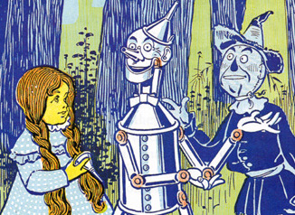
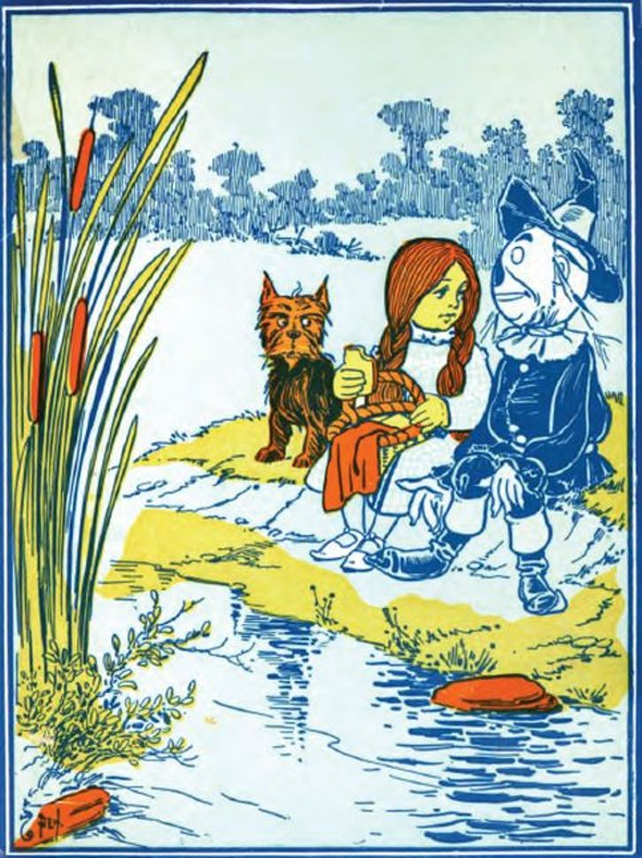

Chapter 3 - How Dorothy Saved the Scarecrow
When Dorothy was left alone she began to feel hungry. So she went to the cupboard and cut herself some bread, which she spread with butter. She gave some to Toto, and taking a pail from the shelf she carried it down to the little brook and filled it with clear, sparkling water. Toto ran over to the trees and began to bark at the birds sitting there. Dorothy went to get him and saw such delicious fruit hanging from the branches that she gathered some of it, finding it just what she wanted to help out her breakfast. Then she went back to the house, and having helped herself and Toto to a good drink of the cool, clear water, she set about making ready for the journey to the City of Emeralds.
Dorothy had only one other dress, but that happened to be clean and was hanging on a peg beside her bed. It was gingham, with checks of white and blue; and although the blue was somewhat faded with many washings, it was still a pretty frock. The girl washed herself carefully, dressed herself in the clean gingham, and tied her pink sunbonnet on her head. She took a little basket and filled it with bread from the cupboard, laying a white cloth over the top. Then she looked down at her feet and noticed how old and worn her shoes were.
“They surely will never do for a long journey, Toto,” she said. And Toto looked up into her face with his little black eyes and wagged his tail to show he knew what she meant. At that moment Dorothy saw lying on the table the silver shoes that had belonged to the Witch of the East.
"I wonder if they will fit me,” she said to Toto. “They would be just the thing to take a long walk in, for they could not wear out.” She took off her old leather shoes and tried on the silver ones, which fitted her as well as if they had been made for her. Finally, she picked up her basket.
"Come along, Toto,” she said, “we will go to the Emerald City and ask the great Oz how to get back to Kansas again." She closed the door, locked it, and put the key carefully in the pocket of her dress. And so, with Toto trotting along soberly behind her, she started on her journey.
There were several roads nearby, but it did not take her long to find the one paved with yellow brick. Within a short time, she was walking briskly toward the Emerald City, her silver shoes tinkling merrily on the hard, yellow roadbed. The sun shone bright, and the birds sang sweetly, and Dorothy did not feel nearly as bad as you might think a little girl would who had been suddenly whisked away from her own country and set down in the midst of a strange land.
She was surprised, as she walked along, to see how pretty the country was about her. There were neat fences at the sides of the road, painted a dainty blue color, and beyond them were fields of grain and vegetables in abundance. Evidently, the Munchkins were good farmers and able to raise large crops. Once in a while she would pass a house, and the people came out to look at her and bow low as she went by; for everyone knew she had been the means of destroying the wicked witch and setting them free from bondage.
The houses of the Munchkins were odd-looking dwellings, for each was round, with a big dome for a roof. All were painted blue, for in this country of the East, blue was the favorite color. Toward evening, when Dorothy was tired with her long walk and began to wonder where she should pass the night, she came to a house rather larger than the rest. On the green lawn before it, many men and women were dancing. Five little fiddlers played as loudly as possible, and the people were laughing and singing, while a big table nearby was loaded with delicious fruits and nuts, pies and cakes, and many other good things to eat.
The people greeted Dorothy kindly and invited her to supper and to pass the night with them; for this was the home of one of the richest Munchkins in the land, and his friends were gathered with him to celebrate their freedom from the bondage of the wicked witch. Dorothy ate a hearty supper and was waited upon by the rich Munchkin himself, whose name was Boq. Then she sat down upon a settee and watched the people dance.
When Boq saw her silver shoes he said, “You must be a great sorceress.”
“Why?” asked the girl.
"Because you wear silver shoes and have killed the wicked witch. Besides, you have white in your frock, and only witches and sorceresses wear white.”
“My dress is blue and white checked," said Dorothy, smoothing out the wrinkles in it.
"It is kind of you to wear that," said Boq. "Blue is the color of the Munchkins, and white is the witch color; so we know you are a friendly witch."
Dorothy did not know what to say to this, for all the people seemed to think her a witch, and she knew very well she was only an ordinary little girl who had come by the chance of a cyclone into a strange land.
When she had tired of watching the dancing, Boq led her into the house, where he gave her a room with a pretty bed in it. The sheets were made of blue cloth, and Dorothy slept soundly in them till morning, with Toto curled up on the blue rug beside her.
She ate a hearty breakfast and watched a wee Munchkin baby, who played with Toto and pulled his tail and crowed and laughed in a way that greatly amused Dorothy. Toto was a fine curiosity to all the people, for they had never seen a dog before.
"How far is it to the Emerald City?" the girl asked.
"I do not know," answered Boq, gravely, "for I have never been there. It is better for people to keep away from Oz, unless they have business with him. But it is a long way to the Emerald City, and it will take you many days. The country here is rich and pleasant, but you must pass through rough and dangerous places before you reach the end of your journey."
This worried Dorothy a little, but she knew that only the great Oz could help her get to Kansas again, so she bravely resolved not to turn back. She bade her friends goodbye and again started along the road of yellow brick.
When she had gone several miles, she thought she would stop to rest, and so climbed to the top of the fence beside the road and sat down. There was a great cornfield beyond the fence, and not far away she saw a Scarecrow, placed high on a pole to keep the birds from the ripe corn. Dorothy leaned her chin upon her hand and gazed thoughtfully at the Scarecrow.
Its head was a small sack stuffed with straw, with eyes, nose, and mouth painted on it to represent a face. An old, pointed blue hat, that had belonged to some Munchkin, was perched on this head, and the rest of the figure was a blue suit of clothes, worn and faded, which had also been stuffed with straw. On the feet were some old boots with blue tops, such as every man wore in this country, and the figure was raised above the stalks of corn by means of the pole stuck up its back.
While Dorothy was looking earnestly into the queer, painted face of the Scarecrow, she was surprised to see one of the eyes slowly wink at her. She thought she must have been mistaken at first, for none of the Scarecrows in Kansas ever wink; but presently the figure nodded its head to her in a friendly way.
Then she climbed down from the fence and walked up to it, while Toto ran around the pole and barked.
“Good day,” said the Scarecrow, in a rather husky voice.
“Did you speak?" asked the girl, in wonder.
“Certainly,” answered the Scarecrow; “how do you do?”
“I’m pretty well, thank you,” replied Dorothy, politely; “how do you do?”
“I’m not feeling well,” said the Scarecrow, with a smile, “for it is very tedious being perched up here night and day to scare away crows.”
“Can't you get down?” asked Dorothy.
“No, for this pole is stuck up my back. If you will please take away the pole I shall be greatly obliged to you.”
Dorothy reached up both arms and lifted the figure off the pole; for, being stuffed with straw, it was quite light.
“Thank you very much,” said the Scarecrow, when he had been set down on the ground. “I feel like a new man.”
